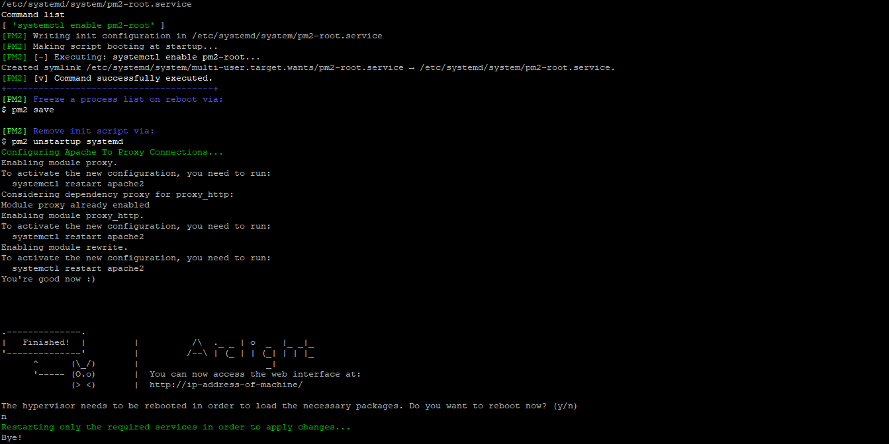

Installation on Ubuntu Server 18.04, 20.04, 22.04(currently in Beta) LTS versions supported
Before installing software, run the sudo apt update
command to make sure you are installing from the latest repository
information.
Install Arclight by running the following commands:
wget https://raw.githubusercontent.com/Chatnaut/Arclight/develop/startup.shchmod +x startup.sh./startup.shWhat the above command does is download the startup script and make it executable to run the script that checks if the system supports Arclight and if it does, it will install the necessary QEMU+KVM packages, configure MongoDB to store the data and sets up the necessary services to run Arclight and Arc API on your system.
Configuring files and permissions
To use VNC to connect into your virtual machines, you will need to edit the /etc/libvirt/qemu.conf file. Be sure to allow listening on IP address 0.0.0.0 by uncommenting the line #vnc_listen = “0.0.0.0” and saving the file.
sudo nano /etc/libvirt/qemu.confPost Installation Configuration
It is recommend to restart your server once the installation is completed before you can configure the reverse proxy for the arc api and use the arclight console. This way the server restarts with all the necessary hypervisor packages loaded and the user groups applied.
